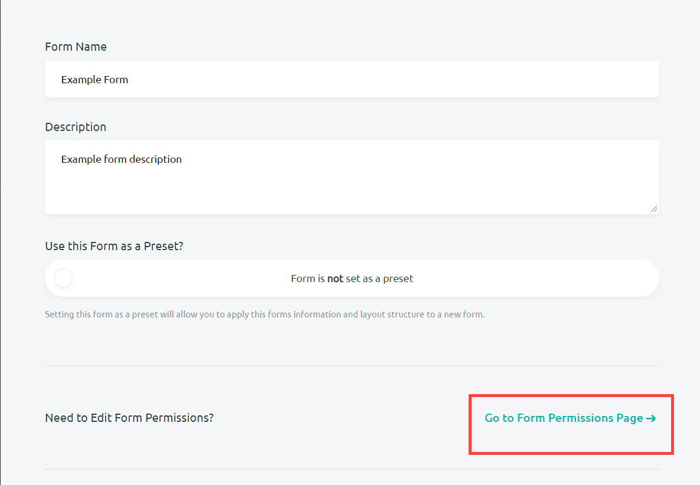
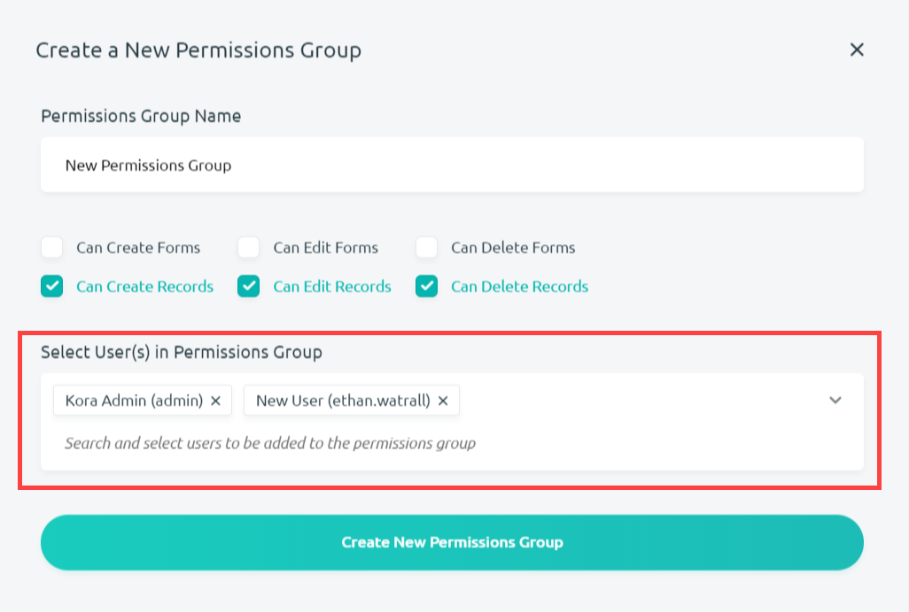

Adding Users to Forms
Adding a user to a form gives certain form permissions to users already in your KORA organization. Form permissions allow users to create, edit, and delete fields as well as records, depending on the permissions given to them. Users added as administrators will automatically have all of these permissions, but Kora allows you to create different permission groups for different users. Limiting the amount of form permissions granted to other users is useful in cases where you only want users to be able to enter data and create records.
Adding Users to Forms
Before adding users to a form, you will have to navigate to the project home page and select the edit form info button located in the form block you want to edit.
The edit form info button will take you to the Edit Form page where you can press Go to Form Permissions Page add additional users to a form and create new permission groups.

From the Form Permissions page, you can follow these steps to add new users to a permissions group for a form:
-
The Admin Group will be the first block in the Form Permissions page. If you want a fuller explanation on how to handle admins, then check out the documentation on form administrators. Below the admin block is the Default Group block where new users with new permissions can be added. Click on Default Group to open it up.

-
Once the block is open, click Add New User(s) to Group to add new users to this group.
-
A box will appear prompting you to Select User(s) to Add to Permissions Group. Click on the Search and Select Users to be Added to the Permission Group drop-down list.
-
Select the users you wanted added to this group from the list that appears below the box. You may also remove accidently selected users by clicking on the x next to their name.
-
Finish adding users to the group by clicking the Add User(s) to Group Button.
Creating a New Permission group
You may also create new permission groups to further customize the types of permissions that form users use.
-
From the Form Permissions page (see previous section), you may select Create a New Permissions Group located just above the admin group.
-
Kora will prompt you for information on the new permissions group. Fill out a new name for the group.

-
Select the particular form permissions that you want the new group to have by checking the boxes next to the particular permissions you want to give.
-
Then select the particular users that you want included in this permission group, and finish the group by selecting Create New Permission Group.

-
Your new permission group will appear as the bottom block on the Form Permissions page.

Editing Permissions for users
You are able to select particular form permissions for users by checking the boxes next to the permissions located in permissions groups. The options allow you to stop certain users from creating, editing, or deleting fields while still giving them the ability to create, edit or delete records. Any combination of these permissions are available.